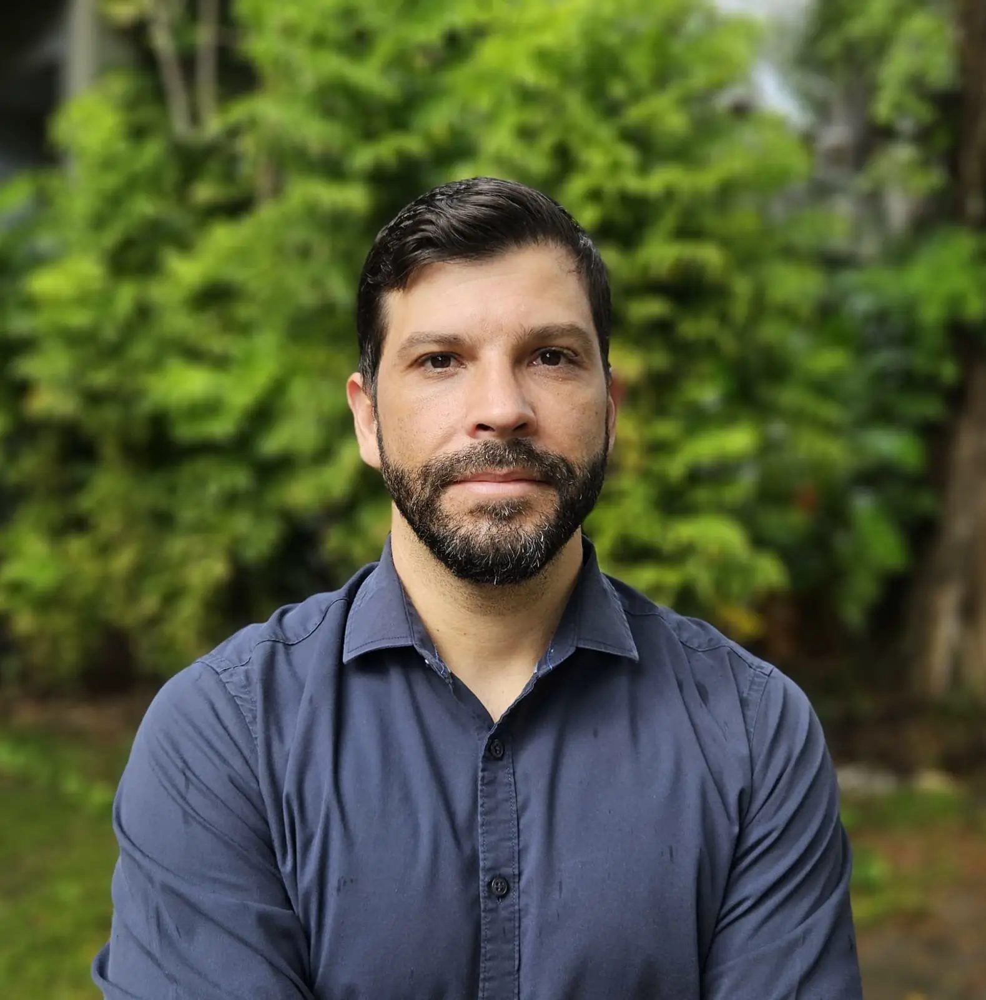

Our research is driven by faculty members with strong international academic backgrounds and complementary expertise.

Ricardo is an Assistant Professor at the Department of Computer Science, Institute of Computing, Federal University of Bahia. He obtained a PhD in Computer Science with emphasis on Computational Intelligence at the Institute of Mathematical Sciences and Computing (ICMC), University of São Paulo, Brazil, including research stays at the Complex Systems Laboratory, Université de Montréal, Canada, and at the Department of Electronic and Information Engineering, The Hong Kong Polytechnic University, China.
His research interests include time series analysis, dynamical systems, chaos theory, and machine learning.
Tatiane is an Assistant Professor at the Department of Computer Science, Institute of Computing, Federal University of Bahia. She obtained a PhD in Computer Science with emphasis on Computational Intelligence at the Institute of Mathematical Sciences and Computing (ICMC), University of São Paulo, Brazil, including a research stay at McGill University, Canada, and at the Department of Computer Sciences and Artificial Intelligence, University of Granada, Spain.
Her research interests include logic and semantics of programs, fuzzy logic, clustering, and text mining.
Felipe is an Assistant Professor at the Department of Computer Science, Institute of Computing, Federal University of Bahia. He received his B.Sc (2016), M.Sc (2018), and D.Sc (2022) degrees in Computer Science, with emphasis on Operations Research, from the Federal University of Rio Grande do Norte (UFRN/Brazil).
His current research interests include, but are not limited to, single- and multi-objective combinatorial optimization, evolutionary computation, hybrid metaheuristics, and graph theory.
Graduate and undergraduate students currently conducting research at LABIA.
We currently have no postdoctoral researchers. Interested candidates are encouraged to reach out directly to our faculty.
| Name | Period | About |
|---|---|---|
| Brenno de Mello Alencar | Since Nov. 2025 | — |
| Marcos Vinicius dos Santos Ferreira | Since Nov. 2025 | — |
| Name | Period | About |
|---|---|---|
| Caroline de Souza dos Santos | Since Nov. 2025 | — |
| Helder José Bastos Ramos | Since Nov. 2025 | — |
| Iarley Porto Cruz Moraes | Since Nov. 2025 | — |
| Izak Alves Gama | Since Nov. 2025 | — |
| Jorge Luis da Silva Batista Filho | Since Nov. 2025 | — |
| Jorge Santos Nery Filho | Since Nov. 2025 | — |
| Luiz Cláudio Dantas Cavalcanti | Since Nov. 2025 | — |
| Tércio Sales Cruz | Since Nov. 2025 | — |
| Wesley Da Silva e Silva | Since Nov. 2025 | — |
| Rafael da Costa Fonsêca | Since Nov. 2025 | — |
| Name | Period | About |
|---|---|---|
| Clóvis Generoso Carmo | Since Nov. 2025 | — |
| Jurgen Fink Júnior | Since Nov. 2025 | — |
| Lucas Teixeira Borges | Since Nov. 2025 | — |
Researchers from partner institutions around the world who collaborate with LABIA on joint projects and research initiatives.
| Name | Country | Since |
|---|---|---|
| João Manuel Portela da Gama | 🇵🇹 Portugal | Nov. 2025 |
Students and researchers who trained at LABIA and have moved on to positions in academia and industry.
| Name | Period | About |
|---|---|---|
| Ana Paula Mendonça | Mar 2019 – Dec 2023 | Hybrid metaheuristics for multi-objective combinatorial optimization in logistics networks. |
| Bruno Nascimento Teixeira | Mar 2016 – Feb 2020 | Graph-based optimization for resource allocation in wireless sensor networks. |
| Name | Period | About |
|---|---|---|
| Carlos Eduardo Souza | Mar 2021 – Dec 2023 | Time series classification using chaos theory features and deep learning. |
| Larissa Oliveira Santos | Mar 2018 – Dec 2020 | Text mining and semantic clustering for automated scientific literature review. |
| Diego Augusto Pereira | Mar 2016 – Dec 2018 | Swarm intelligence applied to traveling salesman problem variants. |
| Name | Period | About |
|---|---|---|
| Gabriel Rocha Figueiredo | Mar 2022 – Dec 2023 | Visualization tools for time series analysis and dynamical systems. |
| Patrícia Corrêa Andrade | Mar 2017 – Dec 2019 | Anomaly detection in IoT data streams using machine learning. |
Researchers who visited LABIA for short- or long-term research stays.
| Name | Institution | Visit |
|---|---|---|
| Alexandre Borges de Jesus | University of Coimbra, Portugal | Jan. 2018 |
We accept MSc., PhD, and Postdoc students. If you're interested in computational intelligence or optimization research, reach out.
Get in Touch →